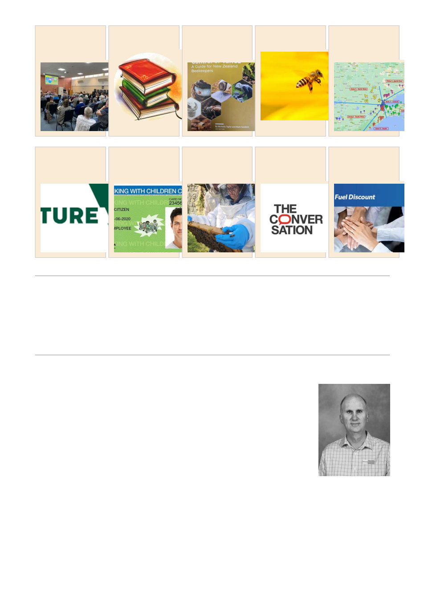

New Members
The Geelong Beekeepers Club would like to welcome the following new members:
Jeremy Colebrook, Philicity Van Schalkwyk, Lyn Weatherson, Stuart Morgan, Brad Stone, Peter
Spear, Kylie Ryan, Mitch Barnes, Andrew Duver, Adrian Matthews, Kate Strachan
August Guest Speaker Summary
Step inside one of Victoria’s most inspiring school‑based sustainability stories.
Principal Michael McLean will take us through Kerrimuir Primary School’s
remarkable apiary journey, a project that began with a simple tick of a box on
a $500 Junior Landcare grant and grew into a fully fledged,
curriculum‑aligned beekeeping program that now engages students from
Grade 1 through Grade 6.
Michael’s presentation is packed with real‑world lessons: navigating risk
management in a busy school environment, designing and building a long
Langstroth hive with a chimney for safe flight paths, relocating bees during
major building works, re‑queening after setbacks, and building a culture where students proudly suit
up, inspect frames, celebrate World Bee Day, and spin their own honey.
It’s a funny, heartfelt, and deeply motivating story about leadership, creativity, and the power of
hands‑on environmental learning. More than anything, it shows how one hive can transform student
wellbeing, spark curiosity, and strengthen a whole school community.
Watch Michael’s presentation and be inspired by what’s possible when a school embraces bees,
sustainability, and bold ideas.